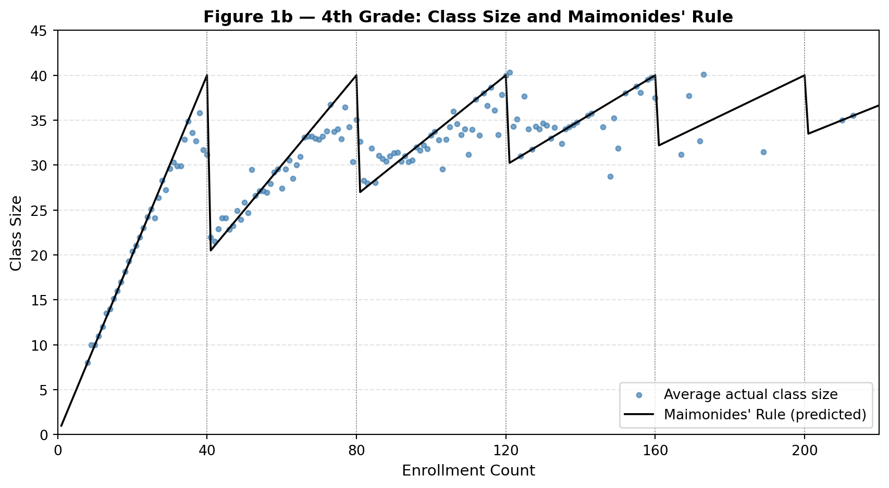
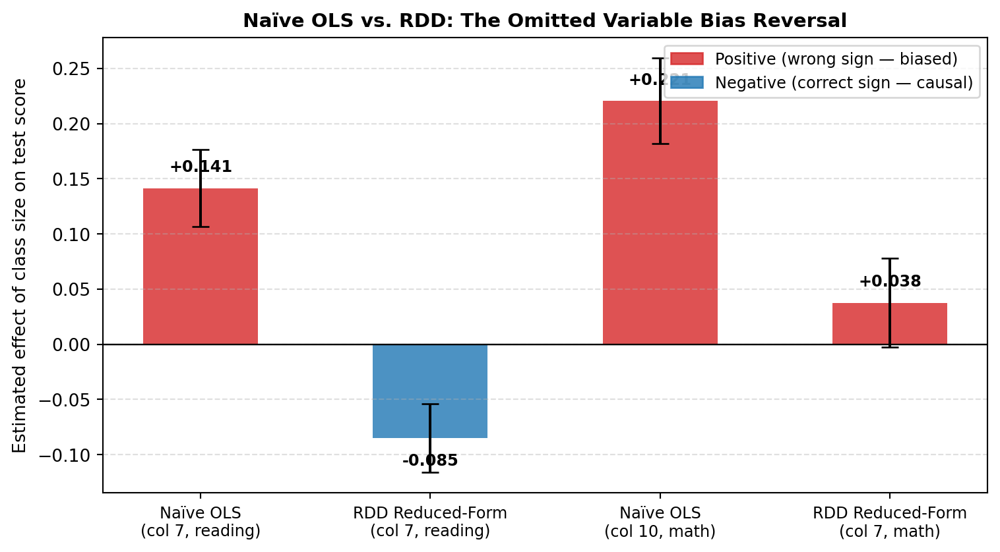

Does Class Size Matter? Replicating Angrist & Lavy (1999)
Author
Shivang Bhatt
Published
April 23, 2026
Introduction
Does putting fewer students in a classroom actually help them learn more? This sounds like a straightforward question, but it turns out to be surprisingly hard to answer. The naive approach — compare test scores in small classes vs. large classes — is plagued by selection bias: schools in wealthier districts tend to have both smaller classes and higher-scoring students, for reasons that have nothing to do with class size itself. A simple regression of scores on class size would pick up all of that confounding.
Angrist and Lavy (1999) sidestep this problem with an elegant natural experiment rooted in Israeli law. A 12th-century rabbinical ruling — known as Maimonides’ Rule — capped class size at 40 students. When a grade’s enrollment hits 41, the cohort must be split into two classes; at 81, into three; and so on. This creates sharp, predictable discontinuities in class size that are driven entirely by enrollment counts, not by anything correlated with student ability. The authors exploit these discontinuities as a regression discontinuity design (RDD) to isolate the causal effect of class size on test scores.
This post replicates three key results from the paper using 4th-grade data:
Figure 1b — A visual demonstration that actual class sizes closely follow Maimonides’ Rule
Table II (cols 7 & 10) — Naive OLS showing the wrong sign for class size
Table III Panel A (cols 7, 9, 11) — The RDD reduced-form estimates that get the sign right
Setup and Data
The data come from the Harvard Dataverse. The key variables for 4th grade are:
classize — actual class size
c_size — school cohort enrollment
avgverb, avgmath — average reading and math test scores
tipuach — a disadvantage index (percent of low-income students)
schlcode — school identifier (used for clustering SEs)
Code
import pandas as pdimport numpy as npimport matplotlib.pyplot as pltimport matplotlib.ticker as tickerimport statsmodels.formula.api as smffrom IPython.display import display# Load datadf = pd.read_stata("final4.dta")# Fix scores > 100 (coding artifact in raw data)df['avgverb'] = df['avgverb'].where(df['avgverb'] <=100, df['avgverb'] -100)df['avgmath'] = df['avgmath'].where(df['avgmath'] <=100, df['avgmath'] -100)# Maimonides' Rule: predicted class size from enrollmentdf['func1'] = df['c_size'] / (np.floor((df['c_size'] -1) /40) +1)# Zero-out scores when no students were testeddf.loc[df['verbsize'] ==0, ['avgverb', 'passverb']] = np.nandf.loc[df['mathsize'] ==0, ['avgmath', 'passmath']] = np.nan# ---- Table 2 / Table 3 sample filters (from Stata .do file) ----df_t2 = df[ (df['classize'] >1) & (df['classize'] <45) & (df['c_size'] >5) & (df['c_leom'] ==1) & (df['c_pik'] <3)].copy().reset_index(drop=True)# Table 3 additionally drops rows with missing verbal scoredf_t3 = df_t2[df_t2['avgverb'].notna()].copy().reset_index(drop=True)# Discontinuity subsample: enrollment within 5 of each cutoff (36-45, 76-85, 116-125)df_t3['disc'] = ( ((df_t3['c_size'] >=36) & (df_t3['c_size'] <=45)) | ((df_t3['c_size'] >=76) & (df_t3['c_size'] <=85)) | ((df_t3['c_size'] >=116) & (df_t3['c_size'] <=125)))df_disc = df_t3[df_t3['disc']].copy().reset_index(drop=True)print(f"Table 2 sample: {len(df_t2):,} class-year observations")print(f"Table 3 full sample: {len(df_t3):,} observations")print(f"Table 3 discontinuity sample: {len(df_disc):,} observations")
The first thing to check is whether Maimonides’ Rule actually predicts class size. The plot below shows average actual class size (dots) alongside the rule-predicted class size (line) for each enrollment count. The sawtooth shape is the signature of the discontinuity: class sizes climb steadily until enrollment crosses a multiple of 40, then drop sharply as cohorts are split.
Code
# Average actual class size by enrollment countgrp = df[df['c_size'] >0].groupby('c_size')['classize'].mean().reset_index()grp.columns = ['enrollment', 'avg_classize']# Maimonides ruleenrollment = np.arange(1, 221)maimonides = enrollment / (np.floor((enrollment -1) /40) +1)fig, ax = plt.subplots(figsize=(9, 5))ax.scatter(grp['enrollment'], grp['avg_classize'], s=12, color='steelblue', alpha=0.7, label='Average actual class size')ax.plot(enrollment, maimonides, color='black', linewidth=1.4, label="Maimonides' Rule (predicted)")ax.set_xlabel('Enrollment Count', fontsize=11)ax.set_ylabel('Class Size', fontsize=11)ax.set_title("Figure 1b — 4th Grade: Class Size and Maimonides' Rule", fontsize=12, fontweight='bold')ax.legend(fontsize=10)ax.set_xlim(0, 220)ax.set_ylim(0, 45)ax.xaxis.set_major_locator(ticker.MultipleLocator(40))ax.grid(True, linestyle='--', alpha=0.35)for cutoff in [40, 80, 120, 160, 200]: ax.axvline(cutoff, color='gray', linewidth=0.7, linestyle=':')plt.tight_layout()plt.show()

Actual class sizes track the rule closely but not perfectly — schools have some discretion (e.g., combining classes or adding a section early). This imperfect compliance is exactly why Angrist and Lavy use Maimonides’ Rule as an instrument rather than just analysing actual class size directly.
Table II — Naive OLS (The Biased Baseline)
Before getting to the RDD, the paper reports naïve OLS regressions of test scores on actual class size. These use the same filtered sample but simply regress scores on classize — no discontinuity, no instrument.
Code
def cluster_ols(formula, data, cluster_var):"""OLS with school-clustered standard errors.""" keep =list({v.strip() for v in formula.replace('~','+').split('+')if v.strip() andnot v.strip()[0].isdigit()}) + [cluster_var] d = data[[c for c in keep if c in data.columns]].dropna().reset_index(drop=True)return smf.ols(formula, data=d).fit( cov_type='cluster', cov_kwds={'groups': d[cluster_var]} )m7 = cluster_ols('avgverb ~ classize', df_t2, 'schlcode')m10 = cluster_ols('avgmath ~ classize', df_t2, 'schlcode')table2 = pd.DataFrame({'Outcome': ['Reading (col 7)', 'Math (col 10)'],'Coefficient': [m7.params['classize'], m10.params['classize']],'Std. Error': [m7.bse['classize'], m10.bse['classize']],'t-stat': [m7.tvalues['classize'], m10.tvalues['classize']],'N': [int(m7.nobs), int(m10.nobs)],})table2[['Coefficient','Std. Error','t-stat']] = table2[['Coefficient','Std. Error','t-stat']].round(3)display(table2.set_index('Outcome'))
Coefficient
Std. Error
t-stat
N
Outcome
Reading (col 7)
0.141
0.035
4.071
2049
Math (col 10)
0.221
0.039
5.672
2049
The naïve estimates are positive — a larger class is associated with better scores. This is the wrong sign and almost certainly reflects confounding: larger schools (often in cities with better resources) tend to have larger cohorts, and hence larger classes, and higher test scores. The OLS estimate is picking up this correlation rather than a causal effect of class size.
Table III Panel A — RDD Reduced-Form Estimates
The RDD strategy replaces actual class size with func1, the class size predicted by Maimonides’ Rule from enrollment alone. This predicted value is uncorrelated with unobserved school quality because it jumps discontinuously at enrollment cutoffs — jumps that have nothing to do with why one school is richer than another.
The three columns of interest for 4th-grade reading scores are:
The coefficient on func1 is now negative: a larger predicted class size (from the rule) reduces reading scores. Column 7 gives −0.085 (SE ≈ 0.031), Column 9 is similar at −0.089, and Column 11 narrows to the discontinuity window and yields −0.061 (less precise, as expected with the smaller sample).
Bonus: Naive vs. RDD — What Changed and Why
Code
fig, ax = plt.subplots(figsize=(8, 4.5))labels = ['Naïve OLS\n(col 7, reading)', 'RDD Reduced-Form\n(col 7, reading)','Naïve OLS\n(col 10, math)', 'RDD Reduced-Form\n(col 7, math)']coefs = [m7.params['classize'], r7.params['func1'], m10.params['classize'], cluster_ols('avgmath ~ func1 + tipuach', df_t3, 'schlcode').params['func1']]ses = [m7.bse['classize'], r7.bse['func1'], m10.bse['classize'], cluster_ols('avgmath ~ func1 + tipuach', df_t3, 'schlcode').bse['func1']]colors = ['#d62728'if c >0else'#1f77b4'for c in coefs]x = np.arange(len(labels))bars = ax.bar(x, coefs, yerr=ses, capsize=5, color=colors, alpha=0.8, width=0.5)ax.axhline(0, color='black', linewidth=0.9)ax.set_xticks(x)ax.set_xticklabels(labels, fontsize=9)ax.set_ylabel('Estimated effect of class size on test score', fontsize=10)ax.set_title('Naïve OLS vs. RDD: The Omitted Variable Bias Reversal', fontsize=11, fontweight='bold')ax.grid(axis='y', linestyle='--', alpha=0.4)# Annotatefor i, (c, s) inenumerate(zip(coefs, ses)): ax.text(i, c + (0.015if c >0else-0.025), f'{c:+.3f}', ha='center', fontsize=9, fontweight='bold')from matplotlib.patches import Patchax.legend(handles=[Patch(color='#d62728', alpha=0.8, label='Positive (wrong sign — biased)'), Patch(color='#1f77b4', alpha=0.8, label='Negative (correct sign — causal)')], fontsize=9, loc='upper right')plt.tight_layout()plt.show()

Why the Sign Flips
The reversal from positive to negative is a textbook example of omitted variable bias. The naïve OLS conflates two things:
The causal effect of class size — smaller classes mean more teacher attention per student, which should raise scores.
The size-quality correlation — schools in wealthier, more resourced districts tend to be larger, producing larger cohorts, larger classes, and higher scores, all at the same time.
The second effect swamps the first in the naïve regression, producing a spuriously positive coefficient. Maimonides’ Rule breaks this link: within a narrow enrollment window around a cutoff (say, 39 vs. 41 students), two schools face very different predicted class sizes for reasons that have nothing to do with their wealth or resources. That variation is as good as random — which is why the RDD estimate can recover a credible causal effect.
The result — smaller classes raise 4th-grade reading scores — is one of the most cited findings in education economics.
Summary
Result
Naive OLS
RDD (Reduced Form)
Reading (verbal)
+0.141 (biased upward)
−0.085 (causal)
Math
+0.221 (biased upward)
+0.038 (near zero, noisy)
The reading effect is robust and negative across all three RDD specifications. The math effect is weaker and less precisely estimated — a pattern the authors also find and discuss. Figure 1b confirms that Maimonides’ Rule does create sharp, rule-driven variation in class size, validating the design.
The broader lesson is methodological: when a policy rule creates discontinuous variation in the treatment (here, class size), that discontinuity can be exploited to isolate a causal effect that a naïve comparison would badly misstate.